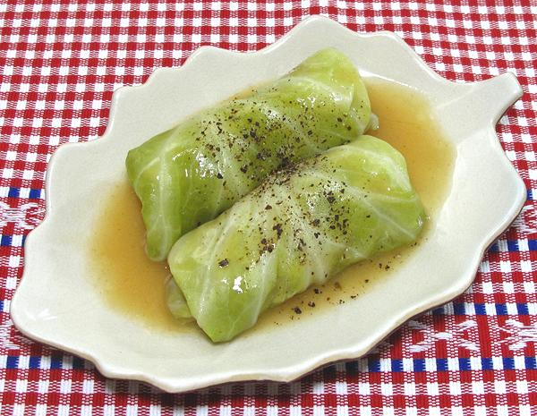
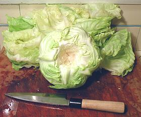
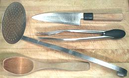
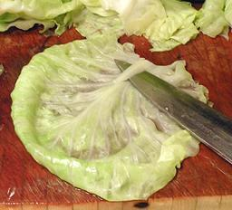
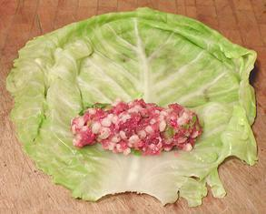
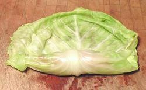
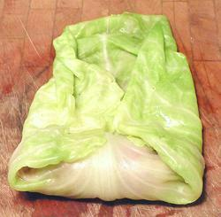
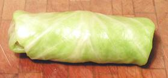

 Cored Cabbage, ready for the boiling water.
 My Cabbage Tools.
 Shaving off the thick rib. Better, drape the leaf over the front of the board to make the rib easier to get at.
 Stuffing placed on a leaf.
 First stage of rolling.
 Sides folded in.
 Fully rolled.